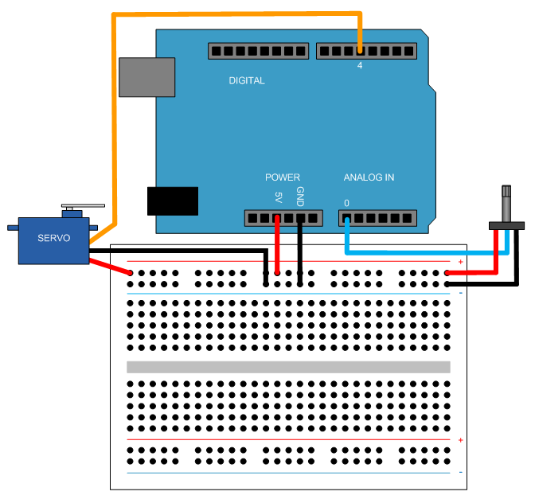

Servo Control
This example shows you how to use Target for Use with Arduino® Uno Hardware to control a standard servo motor.
Contents
- Introduction
- Prerequisites
- Required Hardware
- Task 1 - Connect the Servo Motor to the Arduino Uno Board
- Task 2 - Set the Servo Motor Position via an Internal Source
- Task 3 - Control the Servo Motor Position via a Potentiometer
- Task 4 - Control the Servo Motor Position via a Photocell
- Other Things to Try
- Summary
Introduction
Target for Use with Arduino Uno Hardware enables you to create and run Simulink® models on Arduino Uno board. The target includes a library of Simulink blocks for configuring and accessing Arduino sensors, actuators and communication interfaces.
In this example you will learn how to create Simulink model that controls a standard servo motor. In a standard servo motor, the shaft position can be precisely set, usually between 0 and 180 degrees. Servo motors are used in many industrial, military and consumer applications and products.
Prerequisites
We recommend completing Getting Started with Arduino Uno Hardware.
Required Hardware
To run this example you will need the following hardware:
- Arduino Uno board
- USB cable
- Standard servo motor
- Potentiometer
- CdS photocell
- 10 kOhm resistor
- Breadboard wires
- Small breadboard (recommended)
Task 1 - Connect the Servo Motor to the Arduino Uno Board
In this task, you will connect your motor to the Arduino Uno board. Servo motors have three wires: power, ground, and signal. Connect them as described below.
1. Connect the power wire (usually red) to the 5V pin.
2. Connect the ground wire (usually black) to the ground pin.
3. Connect the signal wire (usually orange) to digital pin 4.
Task 2 - Set the Servo Motor Position via an Internal Source
In this task you will set the position of the servo motor shaft using an internal source. The shaft angle will vary between 0 and 180 degrees, up and down.
1. Open the Servo Control model.
2. Notice the Standard Servo Write block. The block sets the new angle of the servo motor shaft every 0.01 second.
3. In your Simulink model, select Tools > Run on Target Hardware > Run.
4. When the model starts running on the Arduino Uno board, observe the motor shaft position sweeping between 0 and 180 degrees.
Task 3 - Control the Servo Motor Position via a Potentiometer
In this task you will set the position of the servo motor shaft manually, using a potentiometer. Connect the outer potentiometer terminals to 5V and GND pins on your Arduino Uno board. Connect the middle terminal to analog input pin 0. As your rotate the potentiometer, its resistance changes. As a result, the voltage at the analog input pin changes as well. Your task is to set the servo motor angle proportional to this voltage.

1. In MATLAB®, select File > New > Model.
2. Enter simulink at the MATLAB® prompt. This opens the Simulink Library Browser.
3. In the Simulink Library Browser, navigate to Target for Use with Arduino Uno Hardware.
4. Drag the Analog Input block into the model. Double-click the block and set the Pin number to 0, and the Sample time to 0.01 second.
5. Drag the Standard Servo Write block into the model. Double-click the block and set the Pin number to 4.
6. Connect the Analog Input and the Standard Servo Write blocks.
7. From Simulink Math Operations library, drag the Gain block into the model and drop it on the line connecting the Analog Input and the Standard Servo Write block. Double-click the Gain block and set its value to 0.1760 (maximum servo motor displacement in degrees divided by analog input digital resolution i.e. 180/1023).
8. In your model, select Tools > Run on Target Hardware > Prepare to Run....
9. Review the parameters in the dialog that opens. Unless already set, set the Target hardware parameter to Arduino Uno.
10. In the model, select Tools > Run on Target Hardware > Run.
11. When the model starts running on Arduino Uno board, observe the motor shaft sweeping between 0 and 180 degrees.
If you have trouble creating the model as described above, you can use the Servo Control model.
Task 4 - Control the Servo Motor Position via a Photocell
In this task you will create a model that sets the position of the servo motor according to light intensity detected by a photocell. In a dark room the motor shaft should be positioned at 0 degrees, while in a bright room it should be positioned at 180 degrees.
Use a photocell and a resistor instead of the potentiometer you used in Task 3. Connect one end of the photocell to the 5V pin on the Arduino Uno board. Next, connect one end of the resistor to the GND pin on the board. Connect the other ends of the photocell and the resistor together and then to the analog input pin 0 on the board.
The model will be similar to the one used in Task 3.
Other Things to Try
Experiment with other blocks in the Arduino block library. For example:
- Use Digital Input block to adjust the motor shaft position depending on the external control signal or signals.
- Use Standard Servo Read block to read the motor shaft position and compare it with the desired position.
Summary
This example showed you how to use Target for Use with Arduino Uno Hardware to control a standard servo motor. In this example you learned that:
- Standard Servo Write block allows you to set the servo motor shaft position, usually in the range from 0 to 180 degrees.
- Analog Input block measures the voltage applied to an Arduino analog input pin. Variety of sensors can be attached to analog pins.